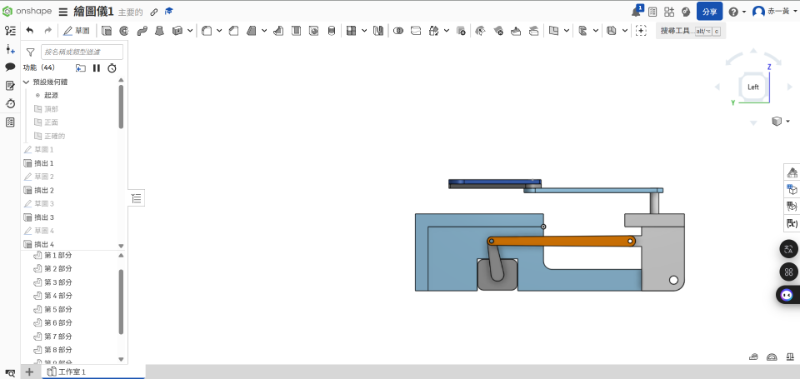
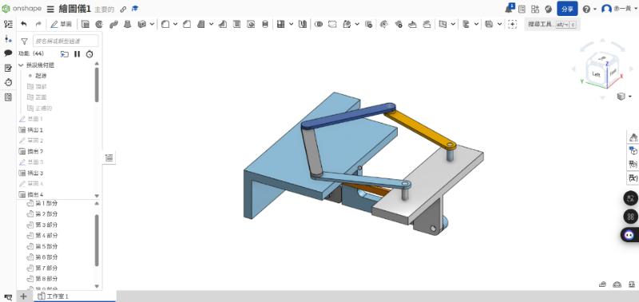

About <<
Previous Next >> w7
w3
用什麼套件完成 5-bar Linkage Plotter 與 Openduck mini 零組件設計繪圖？ Solvespace, Siemens NX, Onshape 或其他？各有什麼優缺點？ (plotter.7z, open_duck_mini.7z)
軟體套件分析 :
Solvespace 優點:適合快速建模且機構連桿模擬簡單適合基本連桿運動學分析。
缺點:功能基礎且缺乏協作功能不適合多人專案和大型專案不友善。
Siemens NX 優點:CAD、CAE、CAM整合功能完整，適合精密設計和高級組建管理。
缺點:對於單純 5-bar linkage繪圖不是很合適，且不如雲端方便。
Onshape 優點:支援多人協作和約束參數建模靈活方便測試不同設計，也可直接機構模擬和檢視路徑。
缺點:高級CAE與渲染功能弱需搭配其他工具，而且隱私受限。
最後我們會選擇Onshape套件繪製5-bar Linkage Plotter的原因和考量 :
- 方便性: 不需要安裝和方便雲端操作，可隨時修改操作。
- 協作性: 支援多人協作討論，版本清晰對於討論或展示非常實用。
- 效率: 5-bar linkage 主要是機構模擬，Onshape 的約束與動畫功能剛好能滿足需求。
我們使用Onshape繪製出plotclock(繪圖儀)
立體視圖:

About <<
Previous Next >> w7